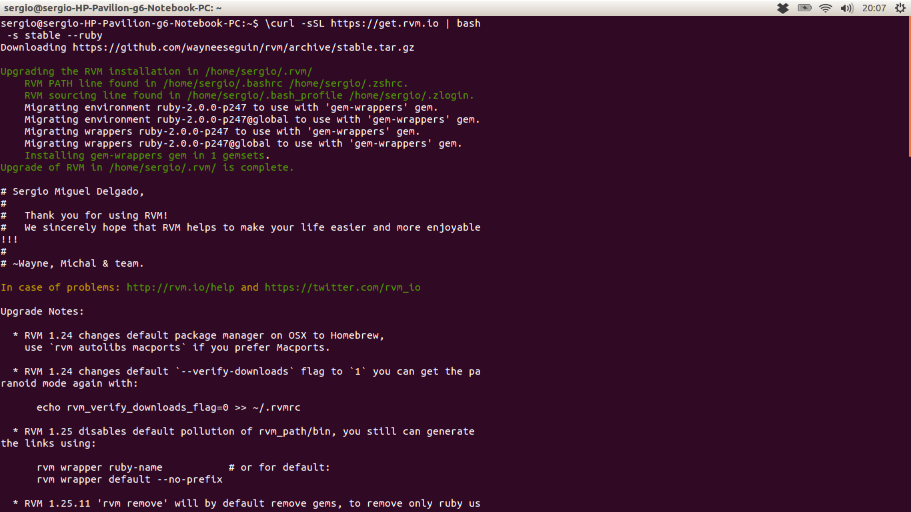
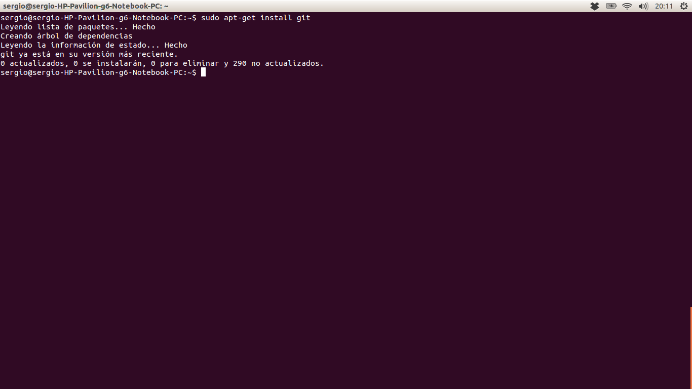

Este apartado no requiere más que un sencillo comando:
*$ \curl -sSL https://get.rvm.io | bash -s stable –ruby*
Una vez ejecutado este comando en la terminal, ya habremos instalado por completo nuestro Ruby Version Manager.
Para instalar Git, necesitas tener las siguientes librerías de las que Git depende: curl, zlib, openssl, expat y libiconv. Para ello usaremos la siguiente línea de comando:
$ sudo apt-get install libcurl4-gnutls-dev libexpat1-dev gettext \libz-dev libssl-dev
A continuación, para completar la instalación solo tendremos que utilizar el clásico comando de Ubuntu “apt-get install”:
$ sudo apt-get install git
